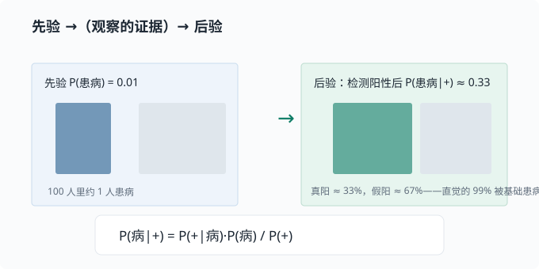

贝叶斯视角：用数据更新信念
目标：把概率从"能算出多少"升级成"如何被证据更新"。读完这一页，你能写出贝叶斯公式、讲清楚先验/似然/后验三个词，并理解为什么它是 Agent 和语言模型里"逐步推理"的思想源头。
两种看待概率的哲学
概率有两种理解方式：
| 视角 | 含义 | 例子 |
|---|---|---|
| 频率派 frequentist | 概率 = 长期发生的频率 | 抛硬币 10 万次，正面约一半 |
| 贝叶斯派 Bayesian | 概率 = 对某个命题的信念程度 | "明天下雨的概率 70%" |
贝叶斯派特别适合机器学习：我们把"模型参数是某个值"当成一个信念，然后用数据去更新它。这正是"从数据中学习"的一种很干净的数学模型。
条件概率：一切的起点
回顾上一页：
$$ P(A\mid B)=\frac{P(A,,B)}{P(B)} $$
它问的是：在 $B$ 已经成立的世界里，$A$ 有多大比例。这是"证据改变了判断"的最小例子——知道 $B$ 之后，我们对 $A$ 的看法不再和原来一样。
贝叶斯公式
先看清我们要解决的一个"方向相反"的问题。上一页的条件概率 $P(A\mid B)$ 问的是"在 B 成立时 A 有多大"，它的方向是从已知结果 B 去问原因 A。可很多时候，我们手头能直接算的却是反方向：比如知道"健康人测出阳性"（$P(+\mid\text{Healthy})$），却想反着问"测出阳性的人是健康人的概率"（$P(\text{Healthy}\mid +)$）。
如何把"正方向"翻成"反方向"？关键想法是：同一个"A 和 B 同时发生"的事件，可以从两个方向拆开。 一方面 $P(A,B)=P(A\mid B)P(B)$，另一方面 $P(A,B)=P(B\mid A)P(A)$。把这两个等号连起来，就能把想要的"反方向"用"正方向"表达出来——这就是贝叶斯公式。
把符号换成"信念 $\theta$ 与数据 $D$"，写出核心公式：
$$ P(\theta\mid D)=\frac{P(D\mid\theta)\cdot P(\theta)}{P(D)} $$
几个名字要记牢：
$$ P(\theta)\qquad\text{先验 prior：学之前对 }\theta\text{ 的看法} $$
$$ P(D\mid\theta)\qquad\text{似然 likelihood：假设 }\theta\text{ 为真时，数据 D 有多像会发生} $$
$$ P(\theta\mid D)\qquad\text{后验 posterior：看到数据 D 之后，对 }\theta\text{ 的更新} $$
$$ P(D)\qquad\text{证据 evidence：归一化常数（让后验加起来是 1）} $$
一句话版本：
后验 $\propto$ 似然 $\times$ 先验 —— "新的信念"由"旧信念"和"数据带来的证据"共同决定。
注意顺序：先验是看数据之前，后验是看数据之后。很多初学者把先验写在还没看数据时就已经错了。用一张图看整个"更新循环"：
flowchart LR
P["P(θ) 先验<br/>初始信念"] --> B[贝叶斯公式]
D["证据 P(D|θ) 似然<br/>+ 数据 D"] --> B
B --> Q["P(θ|D) 后验<br/>更新后的信念"]
Q -. "把后验当作下一步的先验" .-> P
最后那条虚线是贝叶斯的精华：昨天的后验，就是今天的先验。每来一批数据，信念被更新一次，而更新规则完全一致。这正是"持续学习"的数学骨架。
一个完整的手算例子：医生之问
假设某种罕见病的患病率是 $1%$（先验），检测的准确率如下：
- 有病且测阳性：$P(+\mid\text{Sick})=0.99$（真阳率）
- 没病但测阳性：$P(+\mid\text{Healthy})=0.02$（假阳率）
问：一个人测出阳性，真有病的概率 $P(\text{Sick}\mid +)$ 是多少？
先算分母 $P(+)$（证据，两种情况都要算）：
$$ P(+) = P(+\mid\text{Sick})P(\text{Sick}) + P(+\mid\text{Healthy})P(\text{Healthy}) $$
$$ P(+) = 0.99\times 0.01 + 0.02\times 0.99 = 0.0099 + 0.0198 = 0.0297 $$
再算后验：
$$ P(\text{Sick}\mid +)=\frac{0.99\times 0.01}{0.0297}\approx 0.333 $$
结果只有约 33%，而不是 99%——因为假阳率相对患病率太高，大多数阳性其实来自健康人。这就是著名的"医生之问"：直觉会高估，贝叶斯给出精确修正。

这类问题在机器学习里有个正式名字：精确率（precision）——"给定模型预测阳性，其中真的是阳性的比例"，和上面的后验是同一个量。03-05 评估指标 会系统讲它，这里先埋个种子：你现在算的 33%，就是这台检测器在这一患病率下的精确率。
先验从哪来
先验常常是最大争议点：
- 有信息先验：结合领域知识（如"患病率很低"）。
- 无信息先验：不想偏向任何一方，用均匀分布。
- 共轭先验：选一种让后验计算保持同一族分布的形式（比如先验是贝塔分布、算完的后验还是贝塔分布），方便手算。现在只需知道有这种"好算的搭配"存在，具体搭配留到需要时再查。
先验不是"拍脑袋的迷信"——它是你"看数据前已有的合理假设"，而且在数据足够多时，后验会越来越被数据主导，先验的影响会衰减。
深挖：为什么数据多了先验影响就变小？因为似然（数据提供的信息）会叠加到证据里，样本越多、似然越"尖"，先验的形状越显得平坦，后验被数据主导。这给了我们"先验是起点、数据是主角"的实用结论。
从贝叶斯到机器学习：MLE 与 MAP
贝叶斯视角给"学习"一个统一解释：
$$ \theta^{*}=\arg\max_{\theta}\ P(\theta\mid D) $$
这叫做最大后验估计 MAP。如果忽略与 $\theta$ 无关的分母，并取对数：
$$ \log P(\theta\mid D)=\log P(D\mid\theta)+\log P(\theta)-\log P(D) $$
最大化后验 $=$ 最大化"数据的似然 $+$ 先验"。去掉先验项（或假设均匀先验），就退化成最大似然估计 MLE：
$$ \theta^{*}=\arg\max_{\theta}\ \log P(D\mid\theta) $$
这两者的对应关系极其整洁：
- 最大化似然 → 常见损失函数（如交叉熵）
- 加先验 → 正则化（如 L2 惩罚，即按权重的平方加罚——"L2"的 2 指平方），也就是"不要太复杂"
你会在 03-04 偏差-方差与正则化 再看到这层联系。
与 Agent / LLM 的关联（预告）
贝叶斯思想还渗透在 Agent 的"逐步推理"里：
- 每多一条观察（工具结果、新消息），Agent 对任务的判断可以看作一次"信念更新"——这与贝叶斯更新在结构上同构（旧判断 + 新证据 → 新判断），尽管 Agent 并不做严格的概率计算。
- 语言模型按概率生成：每一步在下个词的分布上采样。注意这是一种条件分布（给定前文预测后文），与"用证据修正信念"的贝叶斯更新并不等同，但"用分布表达不确定性、随条件改变分布"的精神是相通的。
- 在 06 LLM 原理 你会看到，模型输出的正是"下一个 token 的概率分布"——用分布表达不确定性，正是这一页的核心。
动手：重现场景
# 重演"医生之问"
sick_prior = 0.01
tpr = 0.99 # 真阳率
fpr = 0.02 # 假阳率
evidence = tpr * sick_prior + fpr * (1 - sick_prior)
posterior = tpr * sick_prior / evidence
print("P(Sick | positive) =", round(posterior, 3)) # ≈ 0.333
# 关键实验：观察先验对后验的影响
for prior in [0.001, 0.01, 0.1, 0.5]:
ev = tpr * prior + fpr * (1 - prior)
post = tpr * prior / ev
print(f"prior={prior:>5}: posterior={post:.3f}")
试着改 sick_prior，观察后验如何变化。你会发现先验越低，阳性越"不值钱"（大量是假阳性）；先验越高，阳性越可信。
思考题
- 为什么直觉会高估"阳性=有病"的概率？先验在这里起多大作用？
- 如果给先验来一个大改变（比如患病率确实是 50%），结果怎么变？
- "后验 ∝ 似然 × 先验"与"正则化"的联系是什么？
- 语言模型每一步更新"下一个词概率"，为什么说它是贝叶斯式的信念更新？
- MAP 与 MLE 的区别是什么？什么时候两者等价？
参考答案
- 直觉会高估，是因为只盯着很高的真阳率 $99%$，却忽略了很低的患病率 $1%$ 和不可忽略的假阳率 $2%$。先验（基础患病率）起决定性作用：发生率越低，绝大多数阳性其实来自健康人，阳性需被大幅"打折"。
- 若患病率先验改为 $50%$：$P(+)=0.99\times0.5+0.02\times0.5=0.505$，后验 $=0.99\times0.5/0.505\approx0.98$。在先验很高时，阳性变得更有信息量，后验接近真阳率。
- $\log P(\theta\mid D)=\log P(D\mid\theta)+\log P(\theta)-\log P(D)$，其中 $\log P(\theta)$（先验对数）正是正则项。例如把权重先验设为高斯，就得到 L2 权重衰减——"别让参数太复杂"在贝叶斯里就是给先验。
- 每生成一个 token，模型都在"给定全部前文"的条件下重新计算"下一个词"的分布：可以把"前文已确定后的预测分布"看作先验，新 token 的加入是新的条件。逐 token 条件生成与贝叶斯"用证据更新信念"在结构上相似，但要注意它只是条件分布的链式展开（自回归分解），并不等价于严格的贝叶斯后验更新。
- MAP 最大化"后验"（含先验），MLE 只最大化"似然"（不含先验）。当先验是均匀分布（所有 $\theta$ 同等可能）时，$\log P(\theta)$ 是常数，MAP 与 MLE 等价。可以理解成"MLE 是无先验（或均匀先验）时的 MAP"。
下一步
- 想正式量化"不确定性有多少" → 01-05 信息论。
- 想看它如何变成交叉熵损失函数 → 03-03 逻辑回归。
- 想了解怎样让"过于复杂"的模型受限 → 03-04 偏差-方差与正则化。